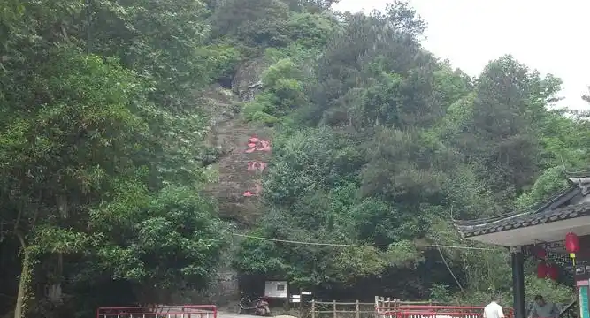
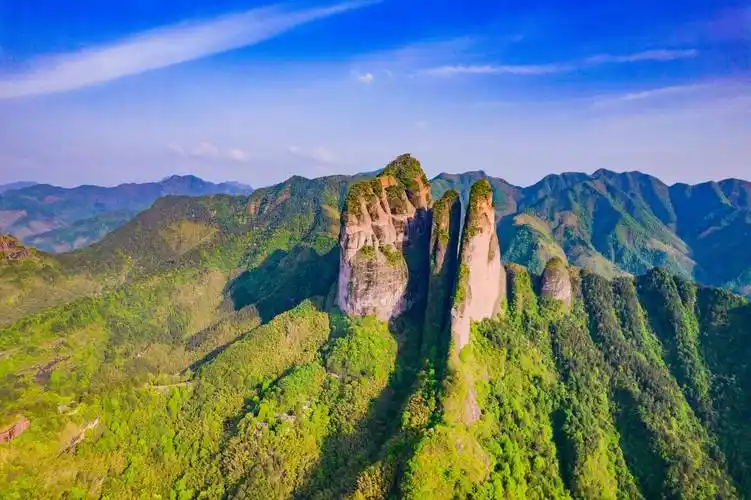
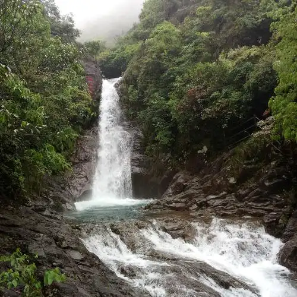
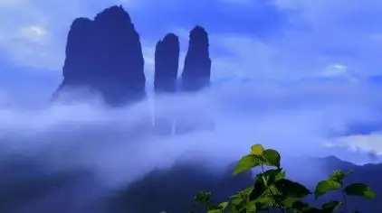
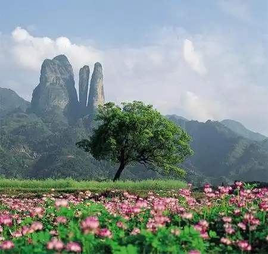

| Stone Gate Joy |
A famous entrance to Mount Jianglang, known for its stunning scenery. The stone gate is a natural formation that has been shaped by centuries of wind and water erosion, creating a unique and awe-inspiring sight. |
 |
| Thousand Li Mountain View |
An excellent viewing spot that offers a panoramic view of Jiangshan County. From this vantage point, visitors can see the rolling hills, dense forests, and distant mountains, making it a must-visit location for nature lovers and photographers. |
 |
| Dragon Spring Waterfall |
This beautiful waterfall is one of the most popular attractions on Mount Jianglang. The water cascades down from a height of over 30 meters, creating a mesmerizing sight and a refreshing atmosphere. |
 |
| Cloudy Peak |
One of the highest peaks on Mount Jianglang, Cloudy Peak offers breathtaking views of the surrounding landscape. On clear days, visitors can see for miles, and the peak is often shrouded in mist, adding to its mystical allure. |
 |
| Green Forest |
This lush forest is a haven for nature enthusiasts. The tall bamboo trees create a peaceful and serene environment, perfect for a leisurely walk or a picnic. The forest is also home to a variety of wildlife, including birds and small mammals. |
 |